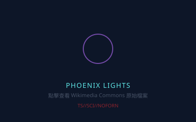

官方解密相片庫
Pentagon AARO 公開檔案、軍方攝影及民間目擊影像 · 點擊查看原始來源

Tic Tac FLIR 截圖
USS Nimitz, 2004
紅外線影像顯示一個橢圓形物體。已被國防部確認真實性。點擊查看 Wikimedia Commons 原始檔案。

Gimbal 旋轉物體
USS Roosevelt, 2015
FLIR 影像中可見物體於水平線上方旋轉。點擊前往 Wikimedia Commons 觀看原始影片檔案。

Go Fast 海面物體
USS Roosevelt, 2015
物體於海面上方高速移動。點擊前往 Wikimedia Commons 觀看原始影片檔案。

Phoenix Lights
Arizona, 1997-03-13
目擊者拍攝嘅巨大 V 形靜音飛行物。點擊查看 Wikimedia Commons 原始檔案。

Roswell 1947 殘骸報導
New Mexico, 1947-07-08
RAAF 公報原稿 "RAAF Captures Flying Saucer"。點擊查看 Wikimedia Commons 原始檔案。
O'Hare 機場目擊
Chicago, 2006-11-07
地勤拍攝到嘅灰色圓盤懸停於 United 閘口上方。點擊查看 Wikipedia 條目詳細資料。
圖片來源說明：上述圖片來自 Wikimedia Commons (Public Domain / CC-BY-SA) 及官方解密檔案。
Tic Tac 圖片已下載至本地；其他圖片以 SVG placeholder 顯示，點擊即可前往原始來源查看高清版本。
Pentagon 已於 2020 年正式解密 Tic Tac / FLIR / Gimbal 三段影片，確認其來源為真實海軍 FLIR 系統。